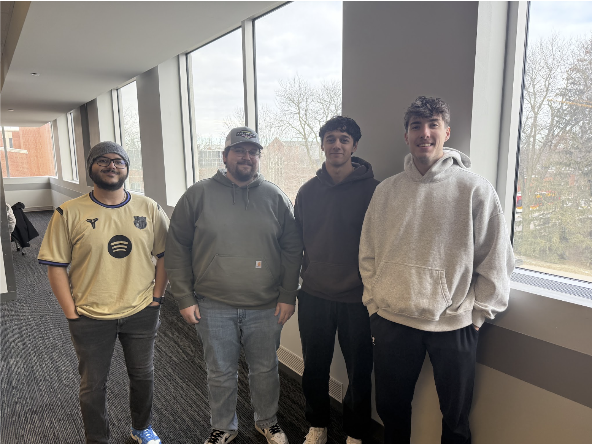

04 / COMS 3090 · SOFTWARE DEVELOPMENT PRACTICES
CySchedule.
Android app.
A full-stack Android application built around shared planning, communication, and the practices that help a team ship together.

COMS 3090 project team · Jack Rice, Brandon Pinto, Luke Brozny, and Bavly Culy
The project
For COMS 3090, Software Development Practices, our team built a full-stack Android application that combined calendar planning with collaboration features. Jack Rice, Brandon Pinto, Luke Brozny, and Bavly Culy worked across the stack to shape the application, plan the structure, and keep the experience cohesive.
My contribution
I worked with Jack Rice and Luke Brozny on the frontend, using Java in Android Studio to create the calendar GUI and implement core interaction flows. I also implemented WebSockets for chat functionality, collaborated closely with the backend team to ensure compatibility, and helped plan the overall system structure with the entire team. In addition, I contributed to the project’s CI/CD workflow.
What I practiced
This project gave me hands-on experience balancing frontend implementation with system-level coordination: defining interfaces between the Android client and backend services, debugging across the stack, and using an iterative development process to keep the team aligned.
TEAM ROLES
- Frontend
Jack Rice · Luke Brozny - Backend
Bavly Culy · Brandon Pinto - Stack
Java · Android Studio · WebSockets - Process
CI/CD · Full-stack planning
PROJECT DEMO
See it
in action.
A walkthrough of the application and the team’s work.